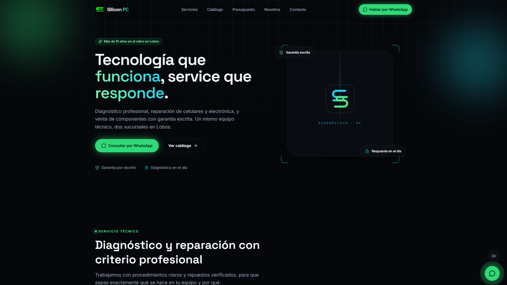
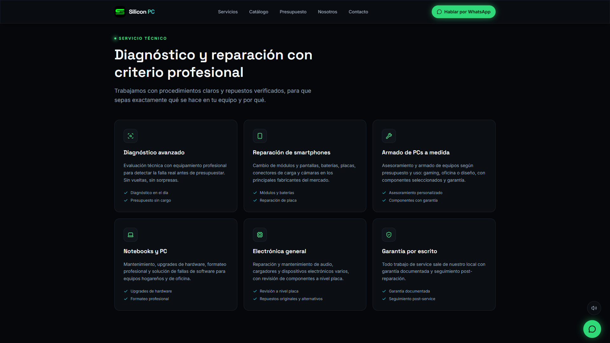

| Redes sociales | Plataforma propia | |
|---|---|---|
| Disponibilidad | Depende del algoritmo | 24/7, siempre visible |
| Primera impresión | Feed genérico, compartido | Diseño exclusivo de marca |
| Autoridad ante cliente empresarial | Percepción informal | Percepción profesional |
| Velocidad de respuesta | Manual, uno por uno | Presupuesto automático |
| Confianza a primera vista | Variable | Alta, inmediata |
Tecnología que funciona, presencia que impone.
silicon-pc.jl-digitalhub.workers.dev